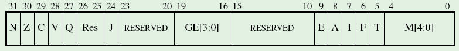
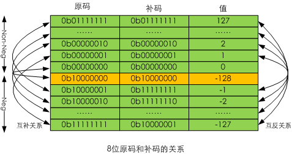
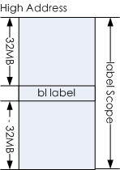
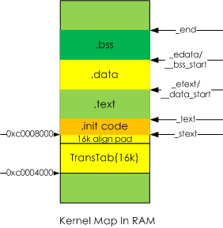

2. ARM彙編語言
2.1. ARM命名規則
ARM是Advanced RISC Machines的縮寫，是典型的RISC(Reduced Instruction Set Computer)架構的CPU。ARM的版本控制的命名規則分成兩類。 一類是基於ARM 架構的版本命名規則，它是一種架構設計的總和；另一類是基於某ARM架構版本的系列處理器的命名規則。
2.1.1. ARM架構命名規則
| ARMv | n | variants | x（variants） |
ARM架構的命名由四部分組成：
- ARMv字符串，這部分固定不變。
- n，ARM指令集版本號，ARM架構版本發佈了7個系列，所以n=[1:7]。其中最新的版本是第7版，Cortex系列CPU採用該版本。
- variants，變種，通常用大寫字母來表示對一類指令或者指令集，變種就是這些大寫字母的連寫。
- x（variants），不支持x後指定的變種。
常見的變種有：
- T，Thumb指令集
- M ，長乘法指令
- E，增強型DSP指令
- J，Java虛擬機Jazelle指令集
- P，LDRD, MCRR, MRRC, PLD和STRD指令
例如，ARMv5TxP表示ARM指令集版本為5，支持Thumb指令集，不支持LDRD, MCRR, MRRC, PLD和STRD指令。
表 1. ARM架構版本 版本 說明
| 版本 | 說明 |
|---|---|
| ARMv1[a] | 該版本的原型機是ARM1，沒有用於商業產品 |
| ARMv2 | 對v1版進行了擴展，包含了對32位結果的乘法指令和協處理器指令的支持。 |
| ARMv3 | ARM公司第一個微處理器ARM6核心是版本3的，它作為IP核、獨立的處理器、具有片上高速緩存、MMU和寫緩衝的集成CPU。 |
| ARMv4 | 應用非常廣泛，但僅支持32位ARM指令集。 |
| ARMv4T | 同時支持ARM指令集4和Thumb指令集1。 |
| ARMv5T | 同時支持ARM指令集5和Thumb指令集2。添加計算開始0個數的clz指令和軟中斷bkpt指令 |
| ARMv5TExP | 在ARMv5T基礎上添加增強型DSP指令，但不支持LDRD, MCRR, MRRC, PLD, 和STRD指令 |
| ARMv5TE | 在ARMv5T基礎上添加增強型DSP指令。 |
| ARMv5TEJ | 在ARMv5TE基礎上支持Jazelle指令集。 |
| ARMv6 | 同時支持ARM指令集6和Thumb指令集3。增加和增強了相當多的單指令多數據處理指令。 |
| ARMv6K | 添加支持多處理的ARM指令集，以及一些額外的內存模型的特性。 |
| ARMv6T2 | 推出Thumb-2技術。為16位和32位指令碼的結合，免去了狀態切換之複雜度。 |
| ARMv7A | 高性能運算，針對手機，PDA等手持便攜設備。增加視頻編解碼和3D處理的NEON多媒體技術。 |
| ARMv7R | 減少輸入輸出延遲，提高指令預測精度，重視實時處理，針對網略設備，汽車儀表等應用。支持PMSA。 |
| ARMv7M | 低成本微處理器應用，去除NEON指令集。 |
[a] ARMv1至ARMv3版本已經廢棄，不再被使用。 | |
2.1.2. ARM處理器命名規則
ARM處理器的命名規則如下：
ARM{x}{y}{z}{T}{D}{M}{I}{E}{J}{F}{-S}
各組成部分解釋如下：
- x，處理器系列
- y，存儲管理/保護單元
- z， cache
- T，支持Thumb指令集
- D，支持片上調試
- M，支持快速乘法器
- I，支持Embedded ICE，支持嵌入式跟蹤調試
- E，支持增強型DSP指令
- J，支持Jazelle
- F，具備向量浮點單元VFP
- -S， 可綜合版本
ARM使用一種基於數字的命名法。在早期（1990s），還在數字後面添加字母后綴，用來進一步明細該處理器支持的特性。就拿ARM7TDMI來說，T代表Thumb指令集，D是說支持JTAG調試(Debugging)，M意指快速乘法器，I則對應一個嵌入式ICE模塊。後來，這4項基本功能成了任何新產品的標配，於是就不再使用這4個後綴相當於默許了。但是新的後綴不斷加入，包括定義存儲器接口的，定義高速緩存的，以及定義"緊耦合存儲器（TCM）"的，於是形成了新一套命名法，這套命名法一直使用至今。比如ARM1176JZF-S，它實際上默認就支持TDMI功能，除此之外還支持JZF。
- ARM7TDMI、ARM720T、ARM9TDMI、ARM940T、ARM920T、Intel的StrongARM等是基於ARMv4T版本。
- ARM9E-S、ARM966E-S、ARM1020E、ARM1022E以及XScale是ARMv5TE的。
- ARM9EJ-S、ARM926EJ-S、ARM7EJ-S、ARM1026EJ-S是基於ARMv5EJ的。ARM10也採用ARMv5TE。
- ARM1136J(F)-S基於ARMv6主要特性有SIMD、Thumb、Jazelle、DBX、(VFP)、MMU。
- ARM1156T2(F)-S基於ARMv6T2 主要特性有SIMD、Thumb-2、(VFP)、MPU。
- ARM1176JZ(F)-S基於ARMv6KZ 在 ARM1136EJ(F)-S 基礎上增加MMU、TrustZone。
- ARM11MPCore基於ARMv6K 在ARM1136EJ(F)-S基礎上可以包括1-4 核SMP、MMU。
從ARMv6指令集才開始支持SMP，這是由於從該指令集開始提供ldrex和strex系列獨佔(Exclusive)訪問指令，該系列指令可以保證多CPU在同時訪問內存時是互斥的。這也可以從內核代碼中得到應徵：
arch/arm/include/asm/atomic.h
#if __LINUX_ARM_ARCH__ >= 6
......
#else /* ARM_ARCH_6 */
#include <asm/system.h>
#ifdef CONFIG_SMP
#error SMP not supported on pre-ARMv6 CPUs
#endif
......
基於ARMv7架構的ARM處理器不再沿用過去的數字命名方式，而是冠以Cortex前綴，基於ARMv7A的處理器成為Cortex-A系列，基於ARMv7R的處理器成為Cortex-R系列，基於ARMv7M的處理器成為Cortex-M系列，
2.2. 程序狀態寄存器
當前程序狀態寄存器CPSR(Current Program Status Register)可以在任何工作模式下通過mrs指令訪問。它包含了條件碼(Condition code)標誌位，禁止中斷標誌位，處理器工作模式位以及其他狀態和控制信息。每一箇中斷模式還擁有一個單獨的保存的程序狀態寄存器SPSR(Saved Program Status Register)，當發生該模式的中斷時，它被用來備份CPSR的值。用戶模式和系統這兩種模式不是中斷模式，所以沒有SPSR寄存器。在這兩種模式下嘗試訪問SPSR結果未知。
圖 1. CPSR和SPSR比特位

如上圖所示，程序狀態寄存器比特位按訪問權限分為四種：
- Reserved bits: 保留位
- User-writable bits: Usr模式可以更新的位：N,Z,C,V,Q,GE[3:0]和E.
- Privileged bits: 特權模式才可更新的位：A,I,F和M[4:0]
- Execution state bits: 執行狀態位J和T：分別表示工作在指令集Jazilla和Thumb，如果J和T同為0 則工作在ARM指令集。不要通過MSR指令改變它，否則結果未知。只可在特權模式更改。
關於J和T的詳細組合如下表所示：
表 2. Memory Hierarchy
| J | T | 指令集 |
|---|---|---|
| 0 | 0 | ARM |
| 0 | 1 | Thumb |
| 1 | 0 | Jazelle |
| 1 | 1 | 保留 |
2.3. ARM指令格式
ARM指令的基本格式如下：
<opcode>{<cond>}{S} <Rd>, <Rn/#Num>{, <operand2>}
其中<>號內的項是必須的，{}號內的項是可選的，/表示任選其中之一。各項的說明如下：
- opcode：指令助記符, 如mov，ldr等
- cond：執行條件，如eq，ne等
- S：是否影響CPSR寄存器的值
- Rd：目標寄存器
- Rn/#Num：第1個操作數的寄存器或者立即數
- operand2：第2個操作數
靈活的使用第2個操作數“operand2”能夠提高代碼效率。它有如下的形式：
- #immed_n——常數表達式，n表示立即數的位數，通常為12，也即最大為4096，例如：#0x1000。
- Rm——寄存器方式；例如：r1
- [Rm, shift]——寄存器移位方式；例如：[pc, #-4]
比如：subnes r1, r1, #0xd; 如果Z標誌為0(不等)，則執行sub r1, r1, #0xd並根據結果更新CPSR寄存器。 參考資料：ARM嵌入式系統基礎教程（第2版）PPT
指令中的執行條件由CPSR寄存器中的狀態位控制，參考狀態位。 表 3. 條件碼錶
| 條件碼(二進制) | 條件助記符 | 標誌位 | 含義 |
|---|---|---|---|
| 0000 | eq | Z==1 | 相等 |
| 0001 | ne | Z==0 | 不等 |
| 0010 | cs/hs | C==1 | 無符號數大於或等於 |
| 0011 | cc/lo | C==0 | 無符號數小於 |
| 0100 | mi | N==1 | 負數 |
| 0101 | pl | N==0 | 正數或0 |
| 0110 | vs | V==1 | 溢出 |
| 0111 | vc | V==0 | 無溢出 |
| 1000 | hi | C==1 且 Z==0 | 無符號數大於 |
| 1001 | ls | C==0 且 Z==1 | 無符號數小於或等於 |
| 1010 | ge | N==V | 有符號數大於或等於 |
| 1011 | lt | N!=V | 有符號數小於 |
| 1100 | gt | Z==0 且 N==V | 有符號數大於 |
| 1101 | le | Z==1 或 N!=V | 有符號數小於或等於 |
| 1110 | al | 無條件 | 無條件執行(默認) |
2.4. 測試用例
為了進行標誌位等的驗證，這裡使用一個通用的示例程序，它包含兩個文件：
main.S
.section .text
.align 2
.global main
main:
mov r0, #12
mov r1, #34
mov r2, #56
bl print
mov r0, #0
bl quit
注意到main.S中的子程序名為main，這是因為GCC編譯器必須將main作為入口，否則無法使用Glibc的庫函數。注意到mov命令，根據ATPS規則，這裡是給print函數準備參數，這裡可以更改r0和r1中的值，通過print來打印出它們。
print.c
#include <stdio.h>
#include <stdlib.h>
char regs[32][8] =
{
"M0", "M1", "M2", "M3", "M4", "T", "F", "I", /* 0-7 */
"A", "E", " ", " ", " ", "CV", " ", " ", /* 8-15 */
"|", "G", "E", "|", " ", " ", " ", " ", /* 16-23 */
"J", " ", " ", "Q", "V", "C", "Z", "N" /* 24-31 */
};
void format(char *regname, int reg)
{
int i = 0;
if(!reg)
return;
printf("%3s", regname);
for(i = 31; i >= 0; i--)
printf("%3x", reg & (1 << i) ? 1 : 0);
printf("\n");
}
void print(int r0, int r1, int r2)
{
int i = 0;
printf(" General out:\n");
printf(" Hex\tr0 0x%08x\tr1 0x%08x\tr2 0x%08x\n", r0, r1, r2);
printf(" Oct\tr0 %8d\tr1 %8x\tr2 %8d\n\n", r0, r1, r2);
if(r0 || r1 || r2)
{
printf(" Format out:\n ");
for(i = 31; i >= 0; i--)
printf("%3d", i);
printf("\n ");
for(i = 31; i >= 0; i--)
printf("%3s", regs[i]);
printf("\n");
}
format("r0", r0);
format("r1", r1);
format("r2", r2);
}
void quit(int err)
{
exit(err);
}
print.c中的print通過Glibc庫函數printf打印出結果，而quit則通過標準庫函數exit退出運行。另外編譯命令和測試結果如下：
arm-linux-gcc print.c main.S -o test
# ./test
General out:
r0 0x0000000c r1 0x00000022 r2 0x00000038
Format out:
31 30 29 28 27 26 25 24 23 22 21 20 19 18 17 16 15 14 13 12 11 10 9 8 7 6 5 4 3 2 1 0
N Z C V O CV I F T M4 M3 M2 M1 M0
r0 0 0 0 0 0 0 0 0 0 0 0 0 0 0 0 0 0 0 0 0 0 0 0 0 0 0 0 0 1 1 0 0
r1 0 0 0 0 0 0 0 0 0 0 0 0 0 0 0 0 0 0 0 0 0 0 0 0 0 0 1 0 0 0 1 0
r2 0 0 0 0 0 0 0 0 0 0 0 0 0 0 0 0 0 0 0 0 0 0 0 0 0 0 1 1 1 0 0 0
藉助c語言的格式化輸出，能夠很好的觀察狀態位的變化。 2.4.1. CPSR操作
修改main.S指令的如下，獲取cpsr和spsr寄存器標誌位：
main:
mrs r0, cpsr
mrs r1, spsr
mov r2, #0
......
這裡主要用到了mrs命令，它可以直接獲取當前程序狀態寄存器cpsr和保存的程序狀態寄存器spsr，用戶模式並沒有spsr，所以它的值就是cpsr。以上程序結果如下所示：
General out:
r0 0x20000010 r1 0x20000010 r2 0x00000000
Format out:
31 30 29 28 27 26 25 24 23 22 21 20 19 18 17 16 15 14 13 12 11 10 9 8 7 6 5 4 3 2 1 0
N Z C V O CV I F T M4 M3 M2 M1 M0
r0 0 0 1 0 0 0 0 0 0 0 0 0 0 0 0 0 0 0 0 0 0 0 0 0 0 0 0 1 0 0 0 0
r1 0 0 1 0 0 0 0 0 0 0 0 0 0 0 0 0 0 0 0 0 0 0 0 0 0 0 0 1 0 0 0 0
可以看到r0和r1的值相同，並且只設置了C標誌。而M模式位為0x10，為用戶模式。通常有些情況下需要設置cpsr，可以通過msr指令實現。
mov r0, #0
msr cpsr_f, r0
......
注意這裡的cpsr_f指明操作標誌位[31:24]，這裡將用戶模式可以設置的位於[31:24]中的所有位清零。這裡的f指明瞭傳送的區域，它可以為以下幾種值：
- c：控制標誌位[7:0]
- x：擴展域標誌位[15:8]
- s：狀態域標誌位[23:16]
- f: 條件域標誌位[31:24]
2.4.2. 含s置位的指令
修改main.S指令的以測試含s置位指令：
main:
mov r0, #0 /* without 's' */
mrs r1, cpsr
movs r0, #0 /* with s */
mrs r2, cpsr
bl print
mov r0, #0
bl quit
測試的結果如下所示：
General out:
r0 0x00000000 r1 0x20000010 r2 0x60000010
Format out:
31 30 29 28 27 26 25 24 23 22 21 20 19 18 17 16 15 14 13 12 11 10 9 8 7 6 5 4 3 2 1 0
N Z C V O CV I F T M4 M3 M2 M1 M0
r1 0 0 1 0 0 0 0 0 0 0 0 0 0 0 0 0 0 0 0 0 0 0 0 0 0 0 0 1 0 0 0 0
r2 0 1 1 0 0 0 0 0 0 0 0 0 0 0 0 0 0 0 0 0 0 0 0 0 0 0 0 1 0 0 0 0
可以看到第一條指令並沒有影響標誌位，而movs指令則改變了Z標誌位，也即當前的運算結果為0。
2.4.3. Z標誌條件編碼
首先通過movs賦值r1為0，此時Z標誌位1，r1記錄此時的cpsr值。然後改變r2的值為0，以實現測試moveq和movne的測試。
.macro testz, cmd
movs r0, #0
mrs r1, cpsr
mov r2, #0
\cmd r2, #1
bl print
.endm
.global main
main:
testz moveq
testz movne
mov r0, #0
bl quit
moveq當Z==1時才被執行，顯然此時被執行，r2的值被賦值為1。接著測試movne，它只有在Z==0時才被執行，所以這裡r2的值並沒有被賦值為1，而依然是0。
General out:
r0 0x00000000 r1 0x60000010 r2 0x00000001
Format out:
31 30 29 28 27 26 25 24 23 22 21 20 19 18 17 16 15 14 13 12 11 10 9 8 7 6 5 4 3 2 1 0
N Z C V O CV I F T M4 M3 M2 M1 M0
r1 0 1 1 0 0 0 0 0 0 0 0 0 0 0 0 0 0 0 0 0 0 0 0 0 0 0 0 1 0 0 0 0
r2 0 0 0 0 0 0 0 0 0 0 0 0 0 0 0 0 0 0 0 0 0 0 0 0 0 0 0 0 0 0 0 1
General out:
r0 0x00000000 r1 0x60000010 r2 0x00000000
Format out:
31 30 29 28 27 26 25 24 23 22 21 20 19 18 17 16 15 14 13 12 11 10 9 8 7 6 5 4 3 2 1 0
N Z C V O CV I F T M4 M3 M2 M1 M0
r1 0 1 1 0 0 0 0 0 0 0 0 0 0 0 0 0 0 0 0 0 0 0 0 0 0 0 0 1 0 0 0 0
其他標誌位可以使用相同方法進行測試。
2.5. 原碼和補碼
對於計算機而言，最根本的動作就是高低電位的跳變，從而表示0和1兩種狀態。在計算機中，所有的負數都用補碼錶示，而負數的原碼對於計算機來說沒有任何意義。對於人來說，通常使用十進制，十進制在表示負數時有符號-來表示。但是對於針對計算機而設計的二進制來說，並沒有所謂的符號-來表示負數，而是要拿出一位來表示數的正負——最高位。考慮以下的代碼：
int main()
{
int tmp = -0x1;
printf("tmp:%x\n", tmp);
return 0;
}
儘管編譯時沒有錯誤，但是通常人們並不使用針對計算機設計的二，八或者十六進制添加符號-來表示負數，而是使用十進制-1，或者直接指定符號位：0x80000001。但是注意通過二，八或者十六進製表示的沒有符號-的負數，永遠都被直接編譯進指令中作為補碼使用，否則編譯器將把它們轉換為補碼後再放入指令中。所以0x80000001並不表示-1，而是-2147483647這樣一個數字，這是因為0x80000001是它的補碼，而非-1的。看來補碼的引入並沒有符合人的使用習慣，那麼引入補碼的意義是什麼呢？
模的概念：把一個計量單位稱之為模或模數。例如，時鐘是以12進制進行計數循環的，即以12為模。在時鐘上，時針加上（正撥）12的整數位或減去（反撥）12的整數位，時針的位置不變。14點鐘在捨去模12後，成為（下午）2點鐘（14=14-12=2）。從0點出發逆時針撥10格即減去10小時，也可看成從0點出發順時針撥2格（加上2小時），即2點（0-10=-10=-10+12=2）。因此，在模12的前提下，-10可映射為+2。由此可見，對於一個模數為12的循環系統來說，加2和減10的效果是一樣的；因此，在以12為模的系統中，凡是減10的運算都可以用加2來代替，這就把減法問題轉化成加法問題了（注：計算機的硬件結構中只有加法器，所以大部分的運算都必須最終轉換為加法）。10和2對模12而言互為補數。
同理，計算機的運算部件與寄存器都有一定字長的限制（假設字長為8），因此它的運算也是一種模運算。當計數器計滿8位也就是256個數後會產生溢出，又從頭開始計數。產生溢出的量就是計數器的模，顯然，8位二進制數，它的模數為28=256。在計算中，兩個互補的數稱為"補碼"。 計算機引入補碼後：
- 可以方便地將減法運算轉化成加法運算，運算過程得到簡化。正數的補碼即是它所表示的數的真值，而負數的補碼的數值部份卻不是它所表示的數的真值。採用補碼進行運算，所得結果仍為補碼。
- 0的補碼為0b00000000。但是符號位帶來了負0值，它的補碼與原碼相同為0b10000000，所表示的值為-2N - 1 。對於8位數來說，為-128。
- 若字長為8位，則補碼所表示的範圍為-128～+127；進行補碼運算時，應注意所得結果不應超過補碼所能表示數的範圍。 圖 2. 原碼和補碼的關係
原碼和補碼的關係 
2.6. 條件碼標誌位
N(Negative)、Z(Zero)、C(Carry)及V(oVerflow)統稱為條件標誌位。大部分的ARM 指令可以根據CPSR 中的這些條件標誌位來選擇性地執行。它們在以下兩種情況下被改變：
- 比較指令:CMN,CMP,TEQ和TST
- 一些數學運算指令，邏輯和數據傳輸指令有兩種變體：標誌保持；標誌改變，其中標誌改變的指令後綴為S。有些指令沒有標誌改變的變體。標誌改變變體指令通常只有在目標寄存器不為R15(pc)時才會改變標誌位。 在任何一種情況下，這些標誌位發生了改變，這意味著：
- N：它被設置為結果的bit[31]位，當兩個補碼錶示的有符號整數運算時，N=1 表示運算的結果為負數；N=0 表示結果為正數或零。
- Z：Z=0 表示運算的結果不為零。對於CMP 指令，Z=1表示進行比較的兩個數大小相等。
- C：分4 種情況討論C的設置方法： 在加法指令中(包括比較指令CMN)，當結果產生了進位，則C=1，表示無符號數運算髮生上溢出；其他情況下C=0。 在減法指令中(包括比較指令CMP)，當運算中發生借位則C=0表示無符號數運算髮生下溢出；其他情況下C=1。 對於包含移位操作的非加／減法運算指令，C中包含最後一次溢出的位數數值。 對於其他非加／減法運算指令，C位的值通常不受影響。
- V：對於加／減法運算指令，當操作數和運算結果為二進制的補碼錶示的帶符號數時V＝1 表示符號位溢出。通常其他的指令不影響V 位，具體可參考各指令的說明。
- 通過msr指令直接改變CPSR/SPSR標誌位。
- mrc讀協處理器指令，當目的寄存器為r15(pc)時，用來將協處理器中的條件標誌位拷貝到ARM處理器中。
- ldm系列指令，通常用來拷貝SPSR到CPSR，用於中斷返回。
- rfe指令在特權模式下從內存恢復CPSR。
- 數學和邏輯邏輯指令在目的寄存器為r15時，可能拷貝SPSR到CPSR中。可以用於從中斷中返回。
2.6.1. N負數標誌位測試
測試N標誌位的思想很簡單，就是根據指令結果的符號位為0和1來查看N標誌位。
main:
/* save orig cpsr->r0 */
mrs r0, cpsr
/* give a non-Neg value get cpsr->r1 */
movs r3, #1
mrs r1, cpsr
/* give a Neg value get cpsr->r2 */
movs r3, #-1
mrs r2, cpsr
......
輸出結果如下所示，顯然r1的N標誌位為0，而r2則變為了1。
General out:
Hex r0 0x20000010 r1 0x20000010 r2 0xa0000010
Oct r0 536870928 r1 20000010 r2 -1610612720
Format out:
31 30 29 28 27 26 25 24 23 22 21 20 19 18 17 16 15 14 13 12 11 10 9 8 7 6 5 4 3 2 1 0
N Z C V Q J | E G | CV E A I F T M4 M3 M2 M1 M0
r0 0 0 1 0 0 0 0 0 0 0 0 0 0 0 0 0 0 0 0 0 0 0 0 0 0 0 0 1 0 0 0 0
r1 0 0 1 0 0 0 0 0 0 0 0 0 0 0 0 0 0 0 0 0 0 0 0 0 0 0 0 1 0 0 0 0
r2 1 0 1 0 0 0 0 0 0 0 0 0 0 0 0 0 0 0 0 0 0 0 0 0 0 0 0 1 0 0 0 0
2.6.2. Z零標誌位測試
測試N標誌位的思想很簡單，就是根據指令結果的是否為0來查看Z標誌位。
main:
/* save orig cpsr->r0 */
mrs r0, cpsr
/* give a non-Zero let cpsr->r1 */
movs r3, #1
mrs r1, cpsr
/* give a Zero let cpsr->r2 */
movs r3, #0
mrs r2, cpsr
......
輸出結果如下所示，顯然r1的Z標誌位為0，而r2則變為了1。
General out:
Hex r0 0x20000010 r1 0x20000010 r2 0x60000010
Oct r0 536870928 r1 20000010 r2 1610612752
Format out:
31 30 29 28 27 26 25 24 23 22 21 20 19 18 17 16 15 14 13 12 11 10 9 8 7 6 5 4 3 2 1 0
N Z C V Q J | E G | CV E A I F T M4 M3 M2 M1 M0
r0 0 0 1 0 0 0 0 0 0 0 0 0 0 0 0 0 0 0 0 0 0 0 0 0 0 0 0 1 0 0 0 0
r1 0 0 1 0 0 0 0 0 0 0 0 0 0 0 0 0 0 0 0 0 0 0 0 0 0 0 0 1 0 0 0 0
r2 0 1 1 0 0 0 0 0 0 0 0 0 0 0 0 0 0 0 0 0 0 0 0 0 0 0 0 1 0 0 0 0
2.6.3. C進位標誌位測試
測試C標誌位相對複雜，包括四種情況。
2.6.3.1. 加法指令進位
加法指令add將所有操作數當做無符號處理，CPU內部使用CarryFrom(Rn + shifter_operand)來計算是否進位，其中rn和shifter_operand分別為第一操作數和第二操作數。測試思想為給第一操作數賦值為0xfffffffe，這保證在第一次加1後，不會進位，再次加1後必定進位。另外注意到r0存數了0xfffffffe + 2的結果。CarryFrom的算法很簡單，在ARM指令集中它通過比較Rn + shifter_operand > 232-1的值決定是否上溢。對於8位和16位的語出操作記作CarryFrom8和CarryFrom16，它們通常被用在字節和半字操作中[1]。
main:
/* clean all condition flags */
msr cpsr_f, #0
/* make sure the add result won't carry and
let cpsr->r1 */
mov r3, #0xfffffffe
adds r3, r3, #1
mrs r1, cpsr
/* carried and let cpsr->r2 */
adds r3, r3, #1
mov r0, r3
......
輸出結果如下所示，顯然r1的C標誌位為0，而由於出現進位r2則變為了1。
Hex r0 0x00000000 r1 0x80000010 r2 0xbeb62ebc
Oct r0 0 r1 80000010 r2 -1095356740
Format out:
31 30 29 28 27 26 25 24 23 22 21 20 19 18 17 16 15 14 13 12 11 10 9 8 7 6 5 4 3 2 1 0
N Z C V Q J | E G | CV E A I F T M4 M3 M2 M1 M0
r1 1 0 0 0 0 0 0 0 0 0 0 0 0 0 0 0 0 0 0 0 0 0 0 0 0 0 0 1 0 0 0 0
r2 1 0 1 1 1 1 1 0 1 0 1 1 0 1 1 0 0 0 1 0 1 1 1 0 1 0 1 1 1 1 0 0
2.6.3.2. 減法指令借位
減法指令add將所有操作數當做無符號處理，CPU內部使用NOT BorrowFrom(Rn - shifter_operand)來計算是否借位，其中rn和shifter_operand分別為第一操作數和第二操作數。BorrowFrom的算法很簡單，在ARM指令集中它通過比較Rn - shifter_operand < 0的值決定是否借位。如果發生借位，那麼C標誌為0，否則為1。
/* clean all condition flags */
msr cpsr_f, #0
/* make sure the sub result won't borrow and
let cpsr->r1 */
mov r3, #0x1
subs r3, r3, #1
mrs r1, cpsr
/* borrowed let cpsr->r2 */
subs r3, r3, #1
mrs r2, cpsr
mov r0, r3
......
測試原理：將作出的被減數設置為1，第一次減1時，不發生借位置C為1，此時r3內容為0，然後再減去1，顯然發生借位，所以置C為1。
General out:
Hex r0 0xffffffff r1 0x60000010 r2 0x80000010
Oct r0 -1 r1 60000010 r2 -2147483632
Format out:
31 30 29 28 27 26 25 24 23 22 21 20 19 18 17 16 15 14 13 12 11 10 9 8 7 6 5 4 3 2 1 0
N Z C V Q J | E G | CV E A I F T M4 M3 M2 M1 M0
r0 1 1 1 1 1 1 1 1 1 1 1 1 1 1 1 1 1 1 1 1 1 1 1 1 1 1 1 1 1 1 1 1
r1 0 1 1 0 0 0 0 0 0 0 0 0 0 0 0 0 0 0 0 0 0 0 0 0 0 0 0 1 0 0 0 0
r2 1 0 0 0 0 0 0 0 0 0 0 0 0 0 0 0 0 0 0 0 0 0 0 0 0 0 0 1 0 0 0 0
注意r0中為1-2的值，也即為-1的補碼。
2.6.3.3. 移位指令
- asr：算術右移指令，將符號位拷貝到空位，若移位量為32，則目標寄存器清0，且最後移除的位保留在C中；若移位量大於32，則目標寄存器和C均被清0。
- lsl：邏輯左移指令，空位補0，若移位量為32，則目標寄存器清0，且最後移出的位保留在C中；若移位量大於32，則目標寄存器和C均被清0。若位移量為0，不影響C標誌。
- lsr：邏輯右移指令，空位補0，若移位量為32，則目標寄存器清0，且最後移出的位保留在C中；若移位量大於32，則目標寄存器和C均被清0。若位移量為0，不影響C標誌。
- ror：數據循環右移指令，影響C標誌。
2.6.3.4. V溢出位
在加減運算中，通過OverflowFrom(Rn + shifter_operand)來判斷是否溢出。OverflowFrom分為兩種情況：加法運算中，如果操作數的符號位相同，但是結果的符號位發生改變；在減法運算中，如果兩操作數符號位不同，結果與第一個操作數的符號位也不同，則溢出，也即超出補碼錶示範圍。
main:
/* clean all condition flags */
msr cpsr_f, #0
/* make sure the adds result won't overflow */
mov r3, #0x6ffffffe
adds r3, r3, #1
mrs r1, cpsr
/* overflowed let cpsr->r2 */
adds r3, r3, #1
mrs r2, cpsr
mov r0, r3
......
這裡以加法為例，首先設置r3為0x7ffffffe，確保第一次加1時，不會溢出，而第二次則會發生結果符號位的改變。
General out:
Hex r0 0x80000000 r1 0x00000010 r2 0x90000010
Oct r0 -2147483648 r1 10 r2 -1879048176
Format out:
31 30 29 28 27 26 25 24 23 22 21 20 19 18 17 16 15 14 13 12 11 10 9 8 7 6 5 4 3 2 1 0
N Z C V Q J | E G | CV E A I F T M4 M3 M2 M1 M0
r0 1 0 0 0 0 0 0 0 0 0 0 0 0 0 0 0 0 0 0 0 0 0 0 0 0 0 0 0 0 0 0 0
r1 0 0 0 0 0 0 0 0 0 0 0 0 0 0 0 0 0 0 0 0 0 0 0 0 0 0 0 1 0 0 0 0
r2 1 0 0 1 0 0 0 0 0 0 0 0 0 0 0 0 0 0 0 0 0 0 0 0 0 0 0 1 0 0 0 0
顯然r1中的V為0，而r2中的V為1。
2.7. 跳轉指令
2.7.1. b和bl指令
b(Branch)和bl(Branch and Link)指令實現分枝跳轉，並且支持條件跳轉。bl指令與b指令的區別是它在跳轉前會將當前pc的下一條指令地址存入lr寄存器，指令編碼的區別就在於L位是否為1。所以bl適合子程序調用。bl的指令格式如下，signed_immed_24表示24位有符號立即數，顯然它可以表示的大小為+-8M，由於ARM的指令長度總是32bits，所以可以表示+/-32MB的地址空間。 31 28 27 26 25 24
+-----+--------+---+--------------------------------+
|cond | 1 0 1| L | signed_immed_24 |
+-----+--------+---+--------------------------------+
bl指令的偽代碼表示如下：
if ConditionPassed(cond) then
if L == 1 then
LR = address of the instruction after the branch instruction
PC = PC + (SignExtend_30(signed_immed_24) << 2)
`
bl指令格式如下，它的參數是子程序的標籤，並不接受立即數，所以這牽涉到signed_immed_24計算方法。顯然，它是在編譯器編譯過程中確定。
bl{cond} label
- 首先確定bl指令的地址。
- 然後確定bl參數label代表的地址。
- 計算label與bl指令之間的偏移offset，顯然該偏移的單位為字節。
- 根據公式(offset - 8) >> 2 計算指令偏移數，這裡就是signed_immed_24。
- 如果得到的signed_immed_24值不在−33554432 和 33554428範圍內，則編譯器報錯。
offset之所以要減去8，是因為PC + (SignExtend_30(signed_immed_24) << 2)中的pc是指當前正在執行的pc(excute)，而pc(excute)= pc(fetch) + 8。指令中的label對應的地址相當於pc(fetch)。這裡用一個簡單的例子說明：
.section .text
.align 2
.global main
main:
mov r0, #12
mov r1, #34
mov r2, #56
bl over
.global over
over:
mov r0, #0
以上是一個簡單的跳轉測試，over標籤與bl指令地址相差1個指令，4個字節。反彙編代碼如下：
00008790 <main>:
8790: e3a0000c mov r0, #12 ; 0xc
8794: e3a01022 mov r1, #34 ; 0x22
8798: e3a02038 mov r2, #56 ; 0x38
879c: ebffffff bl 87a0 <over>
000087a0 <over>:
87a0: e3a00000 mov r0, #0 ; 0x0
ebffffff就是指令碼，eb無需解釋了，而0xffffff就是signed_immed_24，它通過(0x87a0 - 0x879c - 8) >> 2計算而得，這個值就是-1，由於指令中的操作數都是採用補碼錶示，所以0xffffff就是-1的補碼。修改例子如下，此時地址相差3個指令，這保證偏移的指令數為正整數1。
.section .text
.align 2
.global main
main:
mov r0, #12
bl over
mov r1, #34
mov r2, #56
.global over
over:
mov r0, #0
觀察反彙編的結果，顯然指令碼為eb000001，正數1的補碼和原碼相同。
00008790 <main>:
8790: e3a0000c mov r0, #12 ; 0xc
8794: eb000001 bl 87a0 <over>
8798: e3a01022 mov r1, #34 ; 0x22
879c: e3a02038 mov r2, #56 ; 0x38
000087a0 <over>:
87a0: e3a00000 mov r0, #0 ; 0x0
圖 3. bl跳轉示意圖
bl跳轉示意圖 
b指令的存在意義在於，有時候無需返回，或者lr寄存器另作它用，此時如需返回需要顯式保存下一 指令地址到其他寄存器。
2.7.2. ldr和adr指令
ldr和adr是另兩個常用來實現跳轉的指令，嚴格來說ldr指令有兩種，根據操作數，它可以是指令，也可以是偽指令。 作為指令的ldr的語法格式如下，通常實現把一個32位的字從內存裝入一個寄存器。
ldr{<cond>} <Rd>，<addr_mode>
指令編碼格式如下：
31 28 27 26 25242322212019 1615 1211 0
+-----+------+-+-+-+-+-+-+----+----+----------------+
|cond | 0 1 |1|P|U|0|W|1| Rn | Rd | addr_mode |
+-----+------+-+-+-+-+-+-+----+----+----------------+
ldr指令根據addr_mode所確定的地址模式將一個32位字讀取到指令中的目標寄存器Rd。如果指令中的尋址方式確定的地址不是字對齊的，則讀出的數值要進行循環右移。所移位數為尋址方式確定的地址bits[1:0]的8倍，也就是說處理器將取到的數值作為字的最低位處理。
addr_mode它確定了指令編碼中的I、P、U、W、Rn和addr_mode位。所有的尋址模式中，都會 確定一個基址寄存器Rn，通常為pc。考慮如下的ldr測試程序：
......
.global main
main:
mov r0, pc
ldr r1, [r0]
ldr r2, main
ldr r0, =main
bl print
b quit
編譯後的反彙編程序如下，顯然對於第一個還有第二個指令來說，它們均是作為指令編譯的，並且是相對於pc(當前正在取指的指令地址，而非正在執行的當前ldr指令的地址)寄存器進行偏移。而第三天指令則是將main的絕對地址0x00008790裝載到r0。所以可以通過ldr指令進行相對偏移來跳轉到C函數
00008790 <main>:
8790: e1a0000f mov r0, pc
8794: e5901000 ldr r1, [r0]
8798: e51f2010 ldr r2, [pc, #-16] ; 8790 <main>
879c: e59f0004 ldr r0, [pc, #4] ; 87a8 <main+0x18>
87a0: ebffff9d bl 861c <print>
87a4: eafffff2 b 8774 <quit>
87a8: 00008790 .word 0x00008790
2.8. 協處理器指令
2.9. ARM彙編偽指令
2.9.1. .macro
宏指令是由.macro和.endm來定義開始和結束的一組指令的集合。它類似於C語言中的宏函數，使用它將可以：
- 使代碼可以重用，減小代碼量。
- 使程序邏輯更加清晰
偽指令格式：
.macro macroname {$param1} {$param2} ...
@commands
.mend
macroname是定義的宏名，$paramx是宏指令的參數，當宏指令被展開式將被替換成相應的值，類似於函數中的形式參數。一個例子是Linux內核中用於打印信息的kputc宏命令。在使用宏參數時必須這樣“$param”表示參數。
.macro kphex,val,len
mov r0, \val
mov r1, #\len
bl phex
.endm
在C語言和彙編語言的交互調用中，使用宏可以簡化參數的傳遞。可以使用.if宏開關來定義宏指令，.exitm可以跳出宏。一個進行移位運算的例子如下：
.macro shiftleft reg, shift
.if \shift < 0
mov \reg, \reg, asr #-\shift
.exitm
.endif
mov \reg, \reg, lsl #\shift
.endm
2.9.2. .rept
.rept 用於重複執行一組指令，它的格式如下：
.rept <repeat>
.endr
repeat指明重複執行的次數。一個例子是Linux內核中用於nop的操作：
.rept 8
mov r0, r0
.endr
2.10. Sandbox
表 4. Memory Hierarchy
圖 4. 內核RAM佈局

[1] 儘管ARM提供了豐富的相關指令，比如uadd8,uadd16等，但並不是所有編譯器都能夠支持這些指令。
上一頁 下一頁 Linux內核學習和研究及嵌入式(ARM)學習和研究的開放文檔 起始頁 3. ARM尋址方式